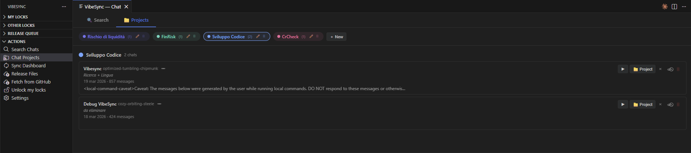

Search your Claude Code chats, organize them into projects, rename sessions, prevent file conflicts — all from VS Code.
Cerca nelle chat di Claude Code, organizzale in progetti, rinomina le sessioni, previeni conflitti sui file — tutto da VS Code.

Sessions are saved as .jsonl files with names like quiet-nibbling-spring. Finding that chat where you solved a bug last week? Good luck.
Le sessioni sono file .jsonl con nomi tipo quiet-nibbling-spring. Trovare la chat dove hai risolto quel bug settimana scorsa? Buona fortuna.
Unlike Claude Web, Claude Code has no projects, no folders, no tags. After a few weeks: 50+ chats, zero structure.
A differenza di Claude Web, Claude Code non ha progetti, cartelle né tag. Dopo poche settimane: 50+ chat, zero struttura.
Two developers (or AI agents) editing the same file? No warning, no lock, just merge hell later.
Due developer (o agenti AI) che modificano lo stesso file? Nessun avviso, nessun lock, solo merge hell dopo.
Everything Claude Web has for chat organization — now in VS Code. No configuration needed. Just install and go.
Tutto ciò che Claude Web offre per organizzare le chat — ora in VS Code. Nessuna configurazione. Installa e via.
Search across all your Claude Code conversations by keyword. Filter by project or role (user / assistant). Matches are highlighted with context.
Cerca in tutte le conversazioni per parola chiave. Filtra per progetto o ruolo (user / assistant). I match sono evidenziati con contesto.
Give meaningful titles and descriptions to your sessions. Turn eager-doodling-hellman into OAuth Login Refactor.
Dai titoli e descrizioni significative alle sessioni. Trasforma eager-doodling-hellman in Refactor Login OAuth.
Create color-coded projects. Assign any chat — even months-old ones — to a project. Filter, browse, stay organized.
Crea progetti con colori. Assegna qualsiasi chat — anche vecchia di mesi — a un progetto. Filtra, naviga, resta organizzato.
Found the chat you need? Click once — a terminal opens with claude --resume. Continue exactly where you left off.
Trovato la chat? Un click apre un terminale con claude --resume. Riprendi esattamente da dove avevi lasciato.
Distributed lock system via GitHub API. Requires Full setup — not needed for Chat Manager only mode.
Sistema di lock distribuito via GitHub API. Richiede il Full setup — non necessario per la modalità Chat Manager.
FileWatcher detects saves. Claude Code hooks lock before AI edits. Zero manual action.
FileWatcher rileva i salvataggi. Gli hook di Claude Code lockano prima delle modifiche AI.
My Locks, Other Locks, Release Queue — all in the VS Code sidebar. Polls GitHub every 30s.
I Miei Lock, Lock di Altri, Coda Rilascio — tutto nella sidebar. Polling GitHub ogni 30s.
Notified when someone locks or unlocks a file. Warning if you edit a file locked by another dev.
Notifica quando qualcuno locka o sblocca un file. Avviso se modifichi un file lockato da altri.
Locks older than 24h are flagged. Force-unlock with one command. No abandoned locks.
I lock >24h vengono segnalati. Sblocca forzatamente con un comando. Nessun lock abbandonato.
New, modified, identical — at a glance.
Nuovi, modificati, identici — a colpo d'occhio.
Opens VS Code's native diff view.
Apre il diff nativo di VS Code.
Check files, click Copy. Filters: all, new, modified.
Spunta file, clicca Copia. Filtri: tutti, nuovi, modificati.
Exclude files or folders with one click.
Escludi file o cartelle con un click.
| Feature | Feature | Claude Code | + VibeSync |
|---|---|---|---|
| Search past conversations | Cerca conversazioni passate | × | ✓ Full-text search |
| Rename chat sessions | Rinomina sessioni chat | × | ✓ Title + description |
| Organize chats in projects | Organizza chat in progetti | × | ✓ Color-coded projects |
| Resume old conversations | Riprendi conversazioni vecchie | --resume | ✓ One click |
| File lock coordination | Coordinamento lock file | × | ✓ Auto via GitHub |
| Conflict warnings | Avvisi conflitto | × | ✓ Real-time |
| File sync to Git | Sync file nel repo Git | × | ✓ Visual dashboard |
| Multilingual UI | UI multilingua | × | ✓ EN / IT |
The installer asks you to choose: Chat Manager only (zero config) or Full setup (locking + sync). It detects your Python path automatically.
L'installer ti chiede: Solo Chat Manager (zero config) o Full setup (locking + sync). Rileva il path Python automaticamente.
Reload VS Code (Ctrl+Shift+P → Reload Window). The lock icon appears in the sidebar.
Ricarica VS Code (Ctrl+Shift+P → Reload Window). L'icona lucchetto appare nella sidebar.
Step-by-step workflows for the most common tasks.
Workflow step-by-step per le operazioni più comuni.
Click the lock icon in the VS Code sidebar → Search Chats. Or press Ctrl+Shift+P → VibeSync: Search Chats.
Clicca l'icona lucchetto nella sidebar VS Code → Cerca nelle Chat. Oppure Ctrl+Shift+P → VibeSync: Search Chats.
Type any keyword (e.g. OAuth bug) and press Enter. Use the filters:
Digita una parola chiave (es. OAuth bug) e premi Invio. Usa i filtri:
Results are grouped by conversation with highlighted matches. Click Resume Chat to reopen the session in a terminal.
I risultati sono raggruppati per conversazione con match evidenziati. Clicca Riprendi Chat per riaprire la sessione nel terminale.
On any chat card (in Search or Projects view), click the pencil icon. An inline form appears: type a title and a short description (max 50 chars). Press Enter to save.
Su qualsiasi card chat (nella vista Ricerca o Progetti), clicca l'icona matita. Appare un form inline: scrivi un titolo e una breve descrizione (max 50 caratteri). Premi Invio per salvare.
Open the Projects tab → click + New → type a name (e.g. API Refactor). A color-coded pill appears in the toolbar.
Apri il tab Progetti → clicca + Nuovo → scrivi un nome (es. Refactor API). Un pill colorato appare nella toolbar.
On any chat card, click the Project button → pick a project from the dropdown. Works from both Search results and the Projects view.
Su qualsiasi card chat, clicca il bottone Progetto → scegli un progetto dal dropdown. Funziona sia dai risultati Ricerca che dalla vista Progetti.
When you save a file, VibeSync's FileWatcher acquires a lock via GitHub API. When Claude Code edits a file, the PreToolUse hook does the same. No manual action needed.
Quando salvi un file, il FileWatcher di VibeSync acquisisce un lock via GitHub API. Quando Claude Code modifica un file, l'hook PreToolUse fa lo stesso. Nessuna azione manuale.
The sidebar shows 3 sections: My Locks, Other Locks, Release Queue. Status bar shows lock count. Notifications pop up when teammates lock/unlock files.
La sidebar mostra 3 sezioni: I Miei Lock, Lock di Altri, Coda Rilascio. La status bar mostra il conteggio. Le notifiche appaiono quando i colleghi lockano/sbloccano file.
Open Sync Dashboard to compare your workspace with the Git repo. Select files, preview diffs, copy. Locks are released automatically after sync.
Apri la Sync Dashboard per confrontare il tuo workspace con il repo Git. Seleziona file, preview diff, copia. I lock si rilasciano automaticamente dopo il sync.